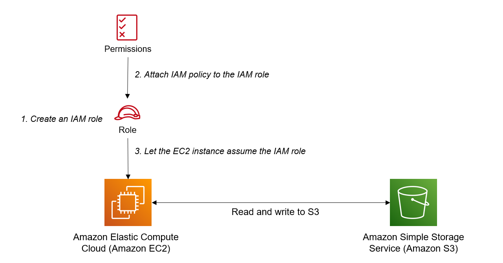

O AWS Identity and Access Management (IAM) é um serviço da web que ajuda você a controlar com segurança o acesso aos recursos da AWS.
Você usa o IAM para controlar quem está autenticado (logado) e autorizado (tem permissões) para usar recursos. Pense no IAM como o centro de controle para todos os recursos da AWS.
O IAM facilita a oferta de acesso seguro a recursos da AWS para vários usuários.
Ao criar uma conta AWS, você começa com uma identidade de login única que tem acesso completo a todos os serviços e recursos da AWS na conta. Essa identidade é chamada de usuário raiz da conta AWS e é acessada fazendo login com o endereço de e-mail e senha usados para criar a conta.
Por padrão, novos usuários são criados SEM acesso a nenhum serviço AWS - eles só podem fazer login no console da AWS.
As permissões devem ser concedidas explicitamente para permitir que um usuário acesse um serviço AWS.
Os usuários IAM são indivíduos que receberam acesso a uma conta AWS.
É possível aplicar permissões granulares com o IAM.
Você pode atribuir aos usuários credenciais de segurança individuais, como chaves de acesso, senhas e dispositivos de autenticação de vários fatores.
O IAM não é usado para autenticação em nível de aplicativo.
A Federação de Identidade (incluindo AD, Facebook etc.) pode ser configurada para permitir acesso seguro a recursos em uma conta AWS sem criar uma conta de usuário IAM.
A autenticação de vários fatores (MFA) pode ser habilitada/imposta para a conta AWS e para usuários individuais na conta.
O MFA usa um dispositivo de autenticação que gera continuamente códigos de autenticação únicos, de seis dígitos.
É uma prática recomendada sempre configurar a autenticação de vários fatores na conta raiz.
O IAM é universal (global) e não se aplica a regiões.
O IAM replica dados em vários centros de dados ao redor do mundo.
A "conta raiz" é a conta criada ao configurar a conta AWS. Tem acesso administrativo completo e é a única conta que tem esse acesso por padrão.
É uma prática recomendada evitar o uso da conta raiz para qualquer coisa que não seja faturamento.
O acesso do usuário comum permite todas as permissões, exceto a administração de grupos e usuários no IAM.
As credenciais de segurança temporárias consistem no ID da chave de acesso da AWS, na chave de acesso secreta e no token de segurança.
O IAM pode atribuir credenciais de segurança temporárias para fornecer aos usuários acesso temporário a serviços/recursos.
Para fazer login, é necessário fornecer o ID da conta ou alias da conta, além de um nome de usuário e senha.
A URL de login inclui o ID da conta ou alias da conta, por exemplo:
https://My_AWS_Account_ID.signin.aws.amazon.com/console/
Alternativamente, é possível fazer login na seguinte URL e inserir manualmente o ID da conta ou alias:
https://console.aws.amazon.com/
O IAM se integra a muitos serviços diferentes da AWS.
Senha do console:
Chaves de acesso:
Certificados de servidor:
Um usuário do IAM é uma entidade que representa uma pessoa ou serviço.
Pode ser atribuído:
As credenciais do usuário raiz da conta são o endereço de e-mail usado para criar a conta e uma senha.
A conta raiz tem permissões administrativas completas, e essas não podem ser restritas.
Melhores práticas para contas raiz:
Os usuários do IAM podem ser criados para representar aplicativos, conhecidos como "contas de serviço".
É possível ter até 5000 usuários por conta AWS.
Cada conta de usuário tem um nome amigável e um ARN que identifica exclusivamente o usuário em toda a AWS.
Um ID exclusivo também é criado, que é retornado apenas ao criar o usuário usando a API, Ferramentas do PowerShell para Windows ou a AWS CLI.
É recomendável criar contas do IAM individuais para usuários (melhor prática para não compartilhar contas).
O ID da chave de acesso e a chave de acesso secreta não são iguais a uma senha e não podem ser usados para fazer login no console da AWS.
O ID da chave de acesso e a chave de acesso secreta só podem ser usados uma vez e devem ser regenerados se forem perdidos.
Uma política de senha pode ser definida para aplicar o comprimento da senha, complexidade, etc. (aplica-se a todos os usuários).
É possível permitir ou não a capacidade de alterar senhas usando uma política do IAM.
As chaves de acesso e senhas devem ser alteradas regularmente.
Os grupos são coleções de usuários e têm políticas anexadas a eles.
Um grupo não é uma identidade e não pode ser identificado como um principal em uma política do IAM.
Use grupos para atribuir permissões a usuários.
Use o princípio do menor privilégio ao atribuir permissões.
Dica de exame: Não é possível aninhar grupos (ter grupos dentro de grupos).
As funções do IAM são usadas para conceder acesso temporário a várias identidades. Essas identidades podem ser pessoas externas à AWS acessando seus serviços, usuários do IAM ou aplicações.
Com funções do IAM, é possível delegar permissões a recursos para usuários e serviços sem usar credenciais permanentes (por exemplo, nome de usuário e senha).
Usuários do IAM ou serviços da AWS podem assumir uma função para obter credenciais de segurança temporárias que podem ser usadas para fazer chamadas de API da AWS.
É possível delegar usando funções.
Não há credenciais associadas a uma função (senha ou chaves de acesso).
Usuários do IAM podem assumir temporariamente uma função para assumir permissões para uma tarefa específica.
Uma função pode ser atribuída a um usuário federado que faz login usando um provedor de identidade externo.
As credenciais temporárias são usadas principalmente com funções do IAM e expiram automaticamente.
As funções podem ser assumidas temporariamente por meio do console ou programaticamente com a AWS CLI, Ferramentas do PowerShell para Windows ou a API.
No diagrama abaixo, a instância do EC2 recebe permissão, através de uma função, que concede acesso temporário para ler e gravar objetos de um bucket do S3.
A política de IAM para o acesso total ao S3 mencionado na etapa 2 é:
{
"Version": "2012-10-17",
"Statement": [
{
"Effect": "Allow",
"Action": [
"s3:*",
"s3-object-lambda:*"
],
"Resource": "*"
}
]
}
Observe que, na política acima, não é especificado nenhum ARN. Ela apenas contém "*" para o recurso. Isso representa todos os buckets de S3. Se, porém, você quiser especificar um único bucket, precisará fornecer o ARN do bucket (fonte).
Os nomes de recurso da Amazon (ARNs) identificam apenas recursos da AWS. A AWS exige um ARN quando você precisa especificar um recurso sem ambiguidade em toda a AWS, como em políticas do IAM, Amazon Relational Database Service (Amazon RDS), etiquetas e chamadas de API.
As funções do IAM podem ser usadas para conceder permissões a aplicativos em execução em instâncias EC2 para solicitações de API da AWS usando perfis de instância.
Apenas uma função pode ser atribuída a uma instância EC2 por vez.
Uma função pode ser atribuída no momento da criação da instância EC2 ou a qualquer momento posteriormente.
Ao usar a AWS CLI ou a API, os perfis de instância devem ser criados manualmente (é automático e transparente pelo console).
Os aplicativos recuperam credenciais temporárias da metadados da instância.
Crie uma função do IAM com duas políticas:
As políticas são documentos que definem permissões e podem ser aplicadas a usuários, grupos e funções.
Documentos de política são escritos em JSON (par chave-valor que consiste em um atributo e um valor).
Todas as permissões são implicitamente negadas por padrão.
A política mais restritiva é aplicada.
O simulador de política do IAM é uma ferramenta para ajudar você a entender, testar e validar os efeitos das políticas de controle de acesso.
O elemento Condição pode ser usado para aplicar lógica condicional adicional.
No IAM da AWS, funções, políticas e grupos são todos usados para gerenciar o acesso aos recursos da AWS.
Uma função define um conjunto de permissões e políticas de acesso que determinam quais ações um usuário ou serviço da AWS pode realizar. As funções são úteis quando você deseja conceder acesso (temporário) a recursos da AWS a uma entidade de terceiros, como um serviço da AWS ou um usuário fora da sua conta da AWS.
Uma política, por outro lado, é um documento que define um conjunto de permissões e especifica a quais recursos da AWS essas permissões concedem acesso. As políticas podem ser anexadas a funções, grupos ou usuários individuais para definir seu nível de acesso aos recursos da AWS. As políticas são úteis quando você deseja definir e impor permissões específicas para um recurso ou conjunto de recursos específicos.
Um grupo é uma coleção de usuários que compartilham permissões comuns. Os grupos facilitam a gestão de permissões para vários usuários de uma vez, pois as políticas podem ser anexadas a um grupo e aplicadas a todos os usuários dentro desse grupo. Ao atribuir permissões a um grupo, é possível conceder ou revogar o acesso para vários usuários com uma única ação.
De maneira geral, as funções são usadas para conceder acesso a recursos ou serviços específicos, as políticas são usadas para definir as permissões para esses recursos ou serviços, e os grupos são usados para organizar e gerenciar vários usuários com permissões semelhantes. Como um todo, funções, políticas e grupos são componentes críticos do IAM da AWS, cada um desempenhando um papel único no gerenciamento do acesso do usuário aos recursos da AWS.
O AWS STS é um serviço da web que permite solicitar credenciais temporárias de privilégios limitados para usuários do IAM ou para usuários autenticados (usuários federados).
Credenciais de segurança temporárias funcionam quase da mesma forma que credenciais de chave de acesso de longo prazo que os usuários do IAM podem usar, com as seguintes diferenças:
Credenciais de segurança temporárias são de curto prazo.
Elas podem ser configuradas para durar de alguns minutos a várias horas.
Após o vencimento, a AWS não as reconhece mais ou permite qualquer tipo de acesso a solicitações de API feitas com elas.
Credenciais de segurança temporárias não são armazenadas com o usuário, mas são geradas dinamicamente e fornecidas ao usuário quando solicitadas.
Quando (ou mesmo antes) as credenciais de segurança temporárias expiram, o usuário pode solicitar novas credenciais, se ainda tiver permissão para fazer isso. As vantagens do STS são:
Você não precisa distribuir ou incorporar credenciais de segurança da AWS de longo prazo com um aplicativo.
É possível fornecer acesso aos seus recursos da AWS a usuários sem ter que definir uma identidade da AWS para eles (as credenciais de segurança temporárias são a base para Funções do IAM e Federação de Identidade).
As credenciais de segurança temporárias têm uma vida útil limitada, portanto, não é necessário girá-las ou revogá-las explicitamente quando não são mais necessárias.
Após o vencimento das credenciais de segurança temporárias, elas não podem ser reutilizadas (é possível especificar por quanto tempo as credenciais são válidas, até um limite máximo). Usuários podem vir de três fontes.
Federação (tipicamente AD):
Federação com aplicativos móveis:
Acesso entre contas:
Muitas funções diferentes na indústria de tecnologia interagirão diretamente ou indiretamente com o IAM da AWS. Se sua organização usa a AWS, você receberá funções diferentes para acessar os serviços necessários para ter sucesso em seu trabalho.